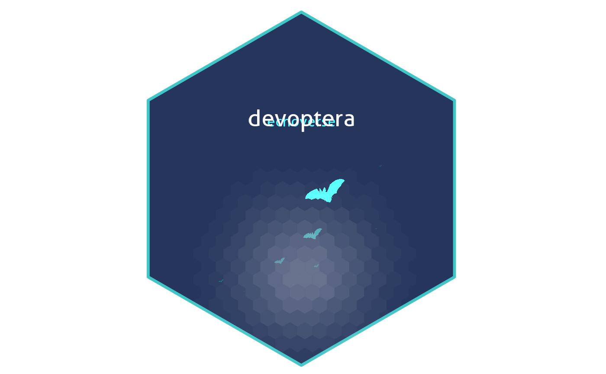

echoverse hex stickers
Authors: Brian Schilder
Authors: Brian Schilder
Vignette updated: Mar-16-2026
Source: Vignette updated: Mar-16-2026
vignettes/make_hex.Rmd
make_hex.RmdMake hex
devoptera::make_hex is a helper function that generates
an echoverse-themed hex sticker using a built-in
template.

Show hex
By default, it saves the sticker at inst/hex/hex.png. Once it’s been created, you can push it to the package’s GitHub repository.
This will then be detected automatically by
rworkflows::use_badges() when the argument
use_hex=TRUE.
rworkflows::use_badges(ref = "RajLabMSSM/devoptera",
add_hex = TRUE)## Finding hex sticker(s) for 1 package(s).## Adding license.## Adding version.## package is up-to-date devel version## Adding code size## Adding commit.## Adding actions.## Adding codecov.## Adding authors.## When refs is provided, paths must have the same length (or be set to NULL). Setting paths=NULL.


Authors: Brian Schilder
[1] “(https://img.shields.io/badge/license-GPL--3-blue.svg)](https://cran.r-project.org/web/licenses/GPL-3)\n
{kind=link}
(https://github.com/RajLabMSSM/devoptera/workflows/rworkflows/badge.svg)](https://github.com/RajLabMSSM/devoptera/actions)\n
{kind=link} Authors:
Brian Schilder
Authors:
Brian Schilder
”
Further customisation
For more customised hex stickers, you can make awesome hex stickers for your R packages using:
- hexSticker
- ggimage lets you render images as data points.
- ggpattern lets you fill objects with patterns or images.
- magick modify PNGs.
Session Info
devoptera::session_info()## ─ Session info ───────────────────────────────────────────────────────────────
## setting value
## version R Under development (unstable) (2026-03-12 r89607)
## os Ubuntu 24.04.4 LTS
## system x86_64, linux-gnu
## ui X11
## language en
## collate en_US.UTF-8
## ctype en_US.UTF-8
## tz UTC
## date 2026-03-16
## pandoc 3.9 @ /usr/bin/ (via rmarkdown)
## quarto 1.8.27 @ /usr/local/bin/quarto
##
## ─ Packages ───────────────────────────────────────────────────────────────────
## package * version date (UTC) lib source
## badger 0.2.5 2025-07-31 [1] CRAN (R 4.6.0)
## Biobase 2.71.0 2025-10-30 [1] Bioconductor 3.23 (R 4.6.0)
## BiocBaseUtils 1.13.0 2025-10-30 [1] Bioconductor 3.23 (R 4.6.0)
## BiocCheck 1.47.18 2026-02-03 [1] Bioconductor 3.23 (R 4.6.0)
## BiocFileCache 3.1.0 2025-10-30 [1] Bioconductor 3.23 (R 4.6.0)
## BiocGenerics 0.57.0 2025-10-30 [1] Bioconductor 3.23 (R 4.6.0)
## BiocManager 1.30.27 2025-11-14 [1] CRAN (R 4.6.0)
## BiocStyle * 2.39.0 2025-10-30 [1] Bioconductor 3.23 (R 4.6.0)
## biocViews 1.79.3 2026-02-25 [1] Bioconductor 3.23 (R 4.6.0)
## bit 4.6.0 2025-03-06 [1] CRAN (R 4.6.0)
## bit64 4.6.0-1 2025-01-16 [1] CRAN (R 4.6.0)
## bitops 1.0-9 2024-10-03 [1] CRAN (R 4.6.0)
## blob 1.3.0 2026-01-14 [1] CRAN (R 4.6.0)
## bookdown 0.46 2025-12-05 [1] CRAN (R 4.6.0)
## bslib 0.10.0 2026-01-26 [2] CRAN (R 4.6.0)
## cachem 1.1.0 2024-05-16 [2] CRAN (R 4.6.0)
## cli 3.6.5 2025-04-23 [2] CRAN (R 4.6.0)
## codetools 0.2-20 2024-03-31 [3] CRAN (R 4.6.0)
## curl 7.0.0 2025-08-19 [2] CRAN (R 4.6.0)
## data.table 1.18.2.1 2026-01-27 [1] CRAN (R 4.6.0)
## DBI 1.3.0 2026-02-25 [1] CRAN (R 4.6.0)
## dbplyr 2.5.2 2026-02-13 [1] CRAN (R 4.6.0)
## desc 1.4.3 2023-12-10 [2] CRAN (R 4.6.0)
## devoptera * 1.0.0 2026-03-16 [1] Bioconductor
## devtools 2.4.6 2025-10-03 [2] CRAN (R 4.6.0)
## digest 0.6.39 2025-11-19 [2] CRAN (R 4.6.0)
## dlstats 0.1.7 2023-05-24 [1] CRAN (R 4.6.0)
## dplyr 1.2.0 2026-02-03 [1] CRAN (R 4.6.0)
## ellipsis 0.3.2 2021-04-29 [2] CRAN (R 4.6.0)
## evaluate 1.0.5 2025-08-27 [2] CRAN (R 4.6.0)
## farver 2.1.2 2024-05-13 [1] CRAN (R 4.6.0)
## fastmap 1.2.0 2024-05-15 [2] CRAN (R 4.6.0)
## filelock 1.0.3 2023-12-11 [1] CRAN (R 4.6.0)
## fontBitstreamVera 0.1.1 2017-02-01 [1] CRAN (R 4.6.0)
## fontLiberation 0.1.0 2016-10-15 [1] CRAN (R 4.6.0)
## fontquiver 0.2.1 2017-02-01 [1] CRAN (R 4.6.0)
## fs 1.6.7 2026-03-06 [2] CRAN (R 4.6.0)
## gdtools 0.5.0 2026-02-09 [1] CRAN (R 4.6.0)
## generics 0.1.4 2025-05-09 [1] CRAN (R 4.6.0)
## ggfun 0.2.0 2025-07-15 [1] CRAN (R 4.6.0)
## ggimage 0.3.5 2026-01-08 [1] CRAN (R 4.6.0)
## ggiraph 0.9.6 2026-02-21 [1] CRAN (R 4.6.0)
## ggplot2 4.0.2 2026-02-03 [1] CRAN (R 4.6.0)
## ggplotify 0.1.3 2025-09-20 [1] CRAN (R 4.6.0)
## glue 1.8.0 2024-09-30 [2] CRAN (R 4.6.0)
## graph 1.89.1 2025-12-02 [1] Bioconductor 3.23 (R 4.6.0)
## gridGraphics 0.5-1 2020-12-13 [1] CRAN (R 4.6.0)
## gtable 0.3.6 2024-10-25 [1] CRAN (R 4.6.0)
## here 1.0.2 2025-09-15 [1] CRAN (R 4.6.0)
## hexbin 1.28.5 2024-11-13 [1] CRAN (R 4.6.0)
## hexSticker 0.5.1 2026-01-21 [1] CRAN (R 4.6.0)
## htmltools 0.5.9 2025-12-04 [2] CRAN (R 4.6.0)
## htmlwidgets 1.6.4 2023-12-06 [2] CRAN (R 4.6.0)
## httr2 1.2.2 2025-12-08 [2] CRAN (R 4.6.0)
## jquerylib 0.1.4 2021-04-26 [2] CRAN (R 4.6.0)
## jsonlite 2.0.0 2025-03-27 [2] CRAN (R 4.6.0)
## knitr 1.51 2025-12-20 [2] CRAN (R 4.6.0)
## labeling 0.4.3 2023-08-29 [1] CRAN (R 4.6.0)
## lattice 0.22-9 2026-02-09 [3] CRAN (R 4.6.0)
## lifecycle 1.0.5 2026-01-08 [2] CRAN (R 4.6.0)
## magick 2.9.1 2026-02-28 [1] CRAN (R 4.6.0)
## magrittr 2.0.4 2025-09-12 [2] CRAN (R 4.6.0)
## MASS 7.3-65 2025-02-28 [3] CRAN (R 4.6.0)
## memoise 2.0.1 2021-11-26 [2] CRAN (R 4.6.0)
## otel 0.2.0 2025-08-29 [2] CRAN (R 4.6.0)
## pillar 1.11.1 2025-09-17 [2] CRAN (R 4.6.0)
## pkgbuild 1.4.8 2025-05-26 [2] CRAN (R 4.6.0)
## pkgconfig 2.0.3 2019-09-22 [2] CRAN (R 4.6.0)
## pkgdown 2.2.0 2025-11-06 [1] CRAN (R 4.6.0)
## pkgload 1.5.0 2026-02-03 [2] CRAN (R 4.6.0)
## purrr 1.2.1 2026-01-09 [2] CRAN (R 4.6.0)
## R.methodsS3 1.8.2 2022-06-13 [1] CRAN (R 4.6.0)
## R.oo 1.27.1 2025-05-02 [1] CRAN (R 4.6.0)
## R.utils 2.13.0 2025-02-24 [1] CRAN (R 4.6.0)
## R6 2.6.1 2025-02-15 [2] CRAN (R 4.6.0)
## ragg 1.5.1 2026-03-06 [2] CRAN (R 4.6.0)
## rappdirs 0.3.4 2026-01-17 [2] CRAN (R 4.6.0)
## RBGL 1.87.0 2025-10-30 [1] Bioconductor 3.23 (R 4.6.0)
## RColorBrewer 1.1-3 2022-04-03 [1] CRAN (R 4.6.0)
## Rcpp 1.1.1 2026-01-10 [2] CRAN (R 4.6.0)
## RCurl 1.98-1.17 2025-03-22 [1] CRAN (R 4.6.0)
## remotes 2.5.0.9000 2026-03-13 [1] Github (r-lib/remotes@6c988cc)
## renv 1.1.8 2026-03-05 [1] CRAN (R 4.6.0)
## rlang 1.1.7 2026-01-09 [2] CRAN (R 4.6.0)
## rmarkdown 2.30 2025-09-28 [1] CRAN (R 4.6.0)
## rprojroot 2.1.1 2025-08-26 [2] CRAN (R 4.6.0)
## RSQLite 2.4.6 2026-02-06 [1] CRAN (R 4.6.0)
## rstudioapi 0.18.0 2026-01-16 [2] CRAN (R 4.6.0)
## RUnit 0.4.33.1 2025-06-17 [1] CRAN (R 4.6.0)
## rvcheck 0.2.1 2021-10-22 [1] CRAN (R 4.6.0)
## rworkflows 1.0.8 2026-03-13 [1] Github (neurogenomics/rworkflows@6d3616f)
## S7 0.2.1 2025-11-14 [1] CRAN (R 4.6.0)
## sass 0.4.10 2025-04-11 [2] CRAN (R 4.6.0)
## scales 1.4.0 2025-04-24 [1] CRAN (R 4.6.0)
## sessioninfo 1.2.3 2025-02-05 [2] CRAN (R 4.6.0)
## showtext 0.9-7 2024-03-02 [1] CRAN (R 4.6.0)
## showtextdb 3.0 2020-06-04 [1] CRAN (R 4.6.0)
## stringdist 0.9.17 2026-01-16 [1] CRAN (R 4.6.0)
## sysfonts 0.8.9 2024-03-02 [1] CRAN (R 4.6.0)
## systemfonts 1.3.2 2026-03-05 [2] CRAN (R 4.6.0)
## textshaping 1.0.5 2026-03-06 [2] CRAN (R 4.6.0)
## tibble 3.3.1 2026-01-11 [2] CRAN (R 4.6.0)
## tidyselect 1.2.1 2024-03-11 [1] CRAN (R 4.6.0)
## usethis 3.2.1 2025-09-06 [2] CRAN (R 4.6.0)
## vctrs 0.7.1 2026-01-23 [2] CRAN (R 4.6.0)
## withr 3.0.2 2024-10-28 [2] CRAN (R 4.6.0)
## xfun 0.56 2026-01-18 [2] CRAN (R 4.6.0)
## XML 3.99-0.22 2026-02-10 [1] CRAN (R 4.6.0)
## yaml 2.3.12 2025-12-10 [2] CRAN (R 4.6.0)
## yulab.utils 0.2.4 2026-02-02 [1] CRAN (R 4.6.0)
##
## [1] /__w/_temp/Library
## [2] /usr/local/lib/R/site-library
## [3] /usr/local/lib/R/library
## * ── Packages attached to the search path.
##
## ──────────────────────────────────────────────────────────────────────────────